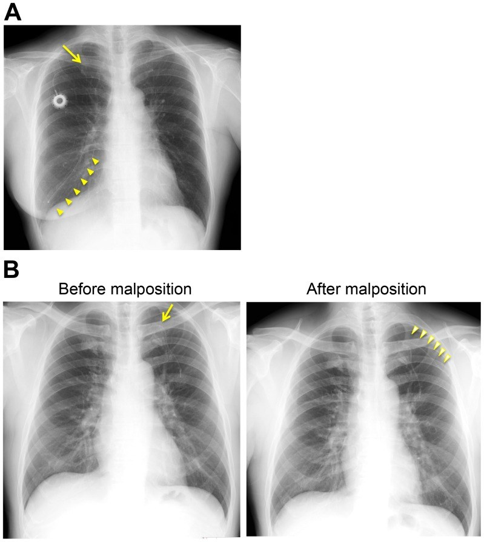
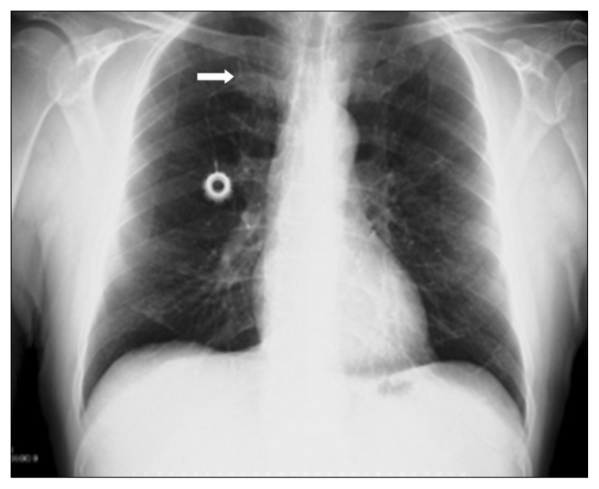
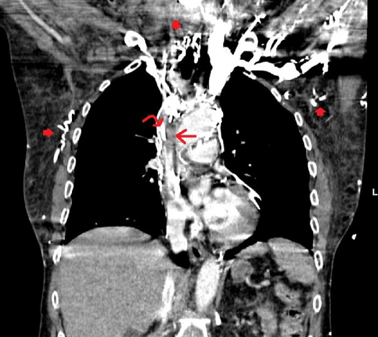
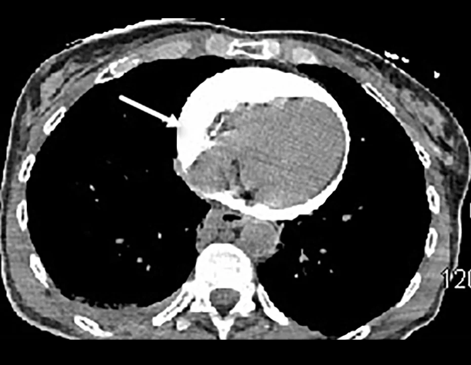

945 — Nhiễm & biến chứng buồng tiêm truyền dưới da (port-a-cath) và catheter tĩnh mạch trung tâm / Port-a-cath and central venous catheter complications
Tags: pattern:bien-chung-catheter pattern:huyet-khoi pattern:di-vat pattern:ap-xe vung:tinh-mach-cua vung:nguc vung:thanh-nguc protocol:port-a-cath protocol:CT-nguc-co-can-quang protocol:sieu-am-Doppler score:CRBSI incidentaloma:port-a-cath
Mức chắc chắn (certainty): tổng hợp y văn (literature synthesis) — số liệu từ đoàn hệ port-a-cath, case report và hướng dẫn; chưa gắn một ca nguyên văn duy nhất.
1. Tổng quan — vì sao port hỏng theo 4 cơ chế
- Port-a-cath (buồng tiêm truyền dưới da, totally implantable venous access device — TIVAD) gồm buồng kim loại/nhựa đặt dưới da thành ngực hoặc cánh tay, nối với catheter đổ vào ngã ba tĩnh mạch chủ trên – nhĩ phải (cavoatrial junction), lý tưởng ngang carina + 2,5–3 cm. Vị trí đầu catheter quyết định 3 biến chứng: quá thấp vào nhĩ phải → loạn nhịp/thủng; quá cao → huyết khối, xoắn; tựa vào thành mạch → mòn và thủng.
- TẠI SAO nhiễm: trong 24 giờ đầu, protein huyết tương bám lên bề mặt catheter tạo lớp điều kiện; vi khuẩn da (Staphylococcus epidermidis, S. aureus) bám và tiết biofilm trong lớp fibrin. Biofilm kháng kháng sinh và kháng thực bào → nhiễm khu trú tại túi port, nhiễm khuẩn huyết liên quan catheter (catheter-related bloodstream infection — CRBSI), hoặc cả hai. Đây là lý do cấy máu dương không đủ để phân biệt nhiễm túi với nhiễm huyết — phải khám túi và lấy cấy đôi.
- TẠI SAO huyết khối: sang chấn nội mô khi đặt + dòng chảy chậm trong tĩnh mạch lớn + tình trạng tăng đông của ung thư + vật liệu catheter. Vỏ fibrin (fibrin sheath) hình thành quanh catheter từ vài ngày đến vài tuần, có thể tạo van một chiều: bơm vào được nhưng không hút ra được — dấu hiệu "withdrawal occlusion".
- TẠI SAO gãy catheter: đường vào dưới đòn bắt catheter đi qua khe giữa xương đòn và xương sườn 1; khi vai cử động, catheter bị bóp mạn tính (pinch-off syndrome) rồi mỏi vật liệu và gãy. Đường vào cánh tay tránh được điểm bóp này: trong 599 ca, gãy catheter 0,88% ở dưới đòn vs 0% ở cánh tay; tắc catheter 1,75% vs 0% (p = 0,04) [PMC3948863].
- TẠI SAO thoát mạch gây ép tim: catheter đã bị huyết khối/vỏ fibrin neo vào thành mạch; khi bơm cản quang áp lực cao (power injection), đầu catheter có thể xuyên thành hoặc bong mảnh, cản quang vào khoang màng tim → chèn ép tim cấp. Ca thực tế: bơm 100 mL Isovue-370 ở 325 psi, 1,5 mL/s qua port có huyết khối ở đầu catheter → ngừng tim 2 phút, CT thấy dịch màng tim cản quang dày đặc [PMC13552184].
2. Mẫu hình + chẩn đoán phân biệt theo thời điểm và hội chứng
- Sớm (≤ 30 ngày): tràn khí màng phổi 0,88% (đường dưới đòn; 0% đường cánh tay), chọc động mạch 0,58%, catheter sai vị trí, loạn nhịp, thủng màng tim, thuyên tắc khí [PMC3948863].
- Muộn (> 30 ngày): nhiễm 3,1–4,1%, huyết khối tĩnh mạch 1,17%, tắc catheter 1,75%, gãy catheter 0,88%, di trú 0,88% [PMC3948863]. Tổng biến chứng sau thủ thuật 10,23% (dưới đòn) vs 4,67% (cánh tay), p = 0,01.
- CRBSI: 13,63% trong 455 bệnh nhân ung thư vú; tiền sử nhiễm khu trú quanh catheter trong 3 tháng là yếu tố nguy cơ độc lập duy nhất, OR 3,86 [PMC13268504].
- Huyết khối liên quan catheter (catheter-related thrombosis — CRT): không triệu chứng 8,8–18%, có triệu chứng 2,7–8% ở bệnh nhân ung thư [PMC13631437].
- Hội chứng tĩnh mạch chủ trên do catheter: huyết khối tĩnh mạch trung tâm ở người có dụng cụ 5–42%; 1–14% người mang dụng cụ tiến triển thành hội chứng TM chủ trên [PMC8383571].
- Pinch-off/gãy: khi gãy và trôi mảnh, vị trí mảnh hay gặp nhất là động mạch phổi 35%, nhĩ phải 27,6%, thất phải 22%, TM chủ trên/ve ngoại vi 15,4%; trong 215 ca gãy-trôi, 24,2% không triệu chứng, còn lại là catheter hỏng (56,3%), loạn nhịp (13%), triệu chứng phổi (4,7%), nhiễm khuẩn huyết (1,8%) [PMC6200171].
- Rút catheter khó: gặp 4% ca rút TIVAD, trong đó 9% do dính nội mạch; có ca lưu 12 năm [PMC12143224].
- Gợi nhớ theo hội chứng — "SIFTS": Sốt khi bơm (CRBSI), Inflow tốt nhưng không aspirate được (vỏ fibrin), Fracture/pinch-off (gãy), Thrombosis/SVC (phù mặt–tay), Shock khi bơm cản quang (thoát mạch–ép tim).
3. Bảng so sánh phân biệt (ma trận đối chiếu)
| Thực thể (entity) | Hình ảnh điển hình | Chốt vào (rule-in) | Chốt loại (rule-out) | Gợi ý xác nhận |
|---|---|---|---|---|
| Nhiễm túi port (pocket infection) | Đỏ, căng, đau quanh buồng; siêu âm: ổ dịch quanh buồng; CT: thâm nhiễm/dịch quanh port | Dấu viêm tại chỗ + ổ dịch quanh buồng | Không đỏ/không đau túi → nghĩ CRBSI hoặc nguồn khác | Khám + siêu âm túi; phải tháo port, không chỉ kháng sinh |
| CRBSI | Không có tổn thương đặc hiệu trên CT; cấy máu đôi dương | Cấy máu trung tâm + ngoại vi dương, DTP ≥ 2 giờ (hoặc tỷ lệ định lượng ≥ 5:1) | Cấy âm hoặc cấy dương nhưng DTP < 2 giờ → nhiễm từ nguồn khác | Cấy đôi trước kháng sinh; đầu catheter ≥ 15 CFU (Maki) |
| Huyết khối liên quan catheter | Siêu âm: tĩnh mạch không xẹp, thấy cục trong lòng; CT: khuyết thuốc trong TM chủ trên | Khuyết thuốc/không xẹp + phù tay cùng bên | Tĩnh mạch xẹp hoàn toàn, không khuyết thuốc → không huyết khối | Doppler màu + CT tĩnh mạch; kháng đông 3 tháng |
| Vỏ fibrin (fibrin sheath) | Siêu âm: lớp echo dày quanh catheter, có thể di động; chụp cản quang: thuốc chạy ngược dọc catheter | Bơm được nhưng không hút được ("withdrawal occlusion") | Hút được dễ dàng → không phải vỏ fibrin đơn thuần | Nghiệm pháp bơm–hút; bơm tPA tại chỗ hoặc thay catheter |
| Pinch-off / gãy catheter | X-quang: catheter hẹp lại giữa xương đòn và xương sườn 1; mảnh catheter mất liên tục, có thể ở tim/ĐM phổi | Dấu pinch-off + mất liên tục catheter | Catheter liên tục, không hẹp → không gãy | X-quang 2 tư thế/CT; không kéo mạnh nếu dính |
| Di trú / malposition | Đầu catheter ở tĩnh mạch azygos, mammaria trong, đối bên, hoặc trong nhĩ phải | Đầu catheter không ở ngã ba TM chủ trên–nhĩ phải | Đầu đúng vị trí, không triệu chứng | X-quang/CT; chỉnh dưới soi |
| Hội chứng TM chủ trên do catheter | CT: hẹp/khuyết thuốc TM chủ trên + tuần hoàn bàng hệ thành ngực; phù mặt–cổ–hai tay | Hẹp/tắc TM chủ trên + bàng hệ + phù | Không hẹp, không bàng hệ → do nguyên nhân khác | CTV/CTA; cân nhắc nong–stent |
| Thoát mạch – ép tim | CT: dịch màng tim tăng đậm độ cản quang; siêu âm: dịch + sụp nhĩ/thất phải thì tâm trương | Tụt áp/ngừng tim ngay sau bơm cản quang + dịch màng tim cản quang | Dịch màng tim đậm độ dịch thấp, không liên quan bơm → nguyên nhân khác | Siêu âm cấp cứu; chọc hút màng tim ngay |

Shiono M et al., PLoS One 2014;9(3):e91335 (PMC3948863), Fig. 7, CC BY 4.0 — nguyên bản, không crop.4. Protocol chụp, chẩn đoán và xử trí
- Đặt port: chọc dưới siêu âm, ưu tiên tĩnh mạch cánh tay hoặc tĩnh mạch cảnh trong; tránh dưới đòn để giảm pinch-off; xác nhận đầu catheter bằng fluoroscopy/X-quang ngay sau đặt (carina + 2,5–3 cm), đo ECG nếu có.
- Trước khi bơm cản quang áp lực: xác nhận port có nhãn power-injectable (thường 5 mL/s, 300 psi); nếu không, không bơm bằng bơm áp lực.
- Chẩn đoán CRBSI (IDSA 2009): cấy máu đôi (trung tâm + ngoại vi) trước kháng sinh; DTP ≥ 2 giờ hoặc tỷ lệ định lượng trung tâm:ngoại vi ≥ 5:1; đầu catheter ≥ 15 CFU (phương pháp Maki). Không cấy dịch trong túi port thay cho cấy máu.
- Ngưỡng xử trí: tháo port khi nhiễm túi/tunnel, S. aureus, Pseudomonas, Candida, sốc nhiễm khuẩn, cấy dương kéo dài > 72 giờ dù kháng sinh, hoặc có viêm nội tâm mạc. CRBSI không biến chứng do vi khuẩn gram dương khác: có thể giữ port + kháng sinh 7–14 ngày + khóa kháng sinh (antibiotic lock).
- Huyết khối có triệu chứng: kháng đông 3 tháng (LMWH/warfarin/DOAC); tháo catheter nếu không còn cần thiết hoặc huyết khối lan.
- Sơ đồ xử trí sốt khi đang bơm qua port:
flowchart TD
A[Sốt/rét run khi bơm qua port] --> B[Khám túi port + cấy máu đôi trước kháng sinh]
B --> C{Túi port đỏ, đau, có dịch?}
C -->|Có| D[Nhiễm túi port: tháo port + kháng sinh]
C -->|Không| E{DTP ≥ 2 giờ hoặc cấy trung tâm dương?}
E -->|Có| F[CRBSI: kháng sinh theo cấy]
F --> G{Tụ cầu vàng, Pseudomonas, Candida, sốc?}
G -->|Có| H[Tháo port]
G -->|Không| I[Giữ port + khóa kháng sinh + theo dõi 72 giờ]
E -->|Không| J[Tìm ổ nhiễm khác; siêu âm/CT nếu sốt kéo dài]
5. Biến thể bình thường và cạm bẫy
- Vỏ fibrin "một chiều" là cạm bẫy hay bị gọi là "port tắc": bơm rửa trơn tru nhưng không hút được máu. Đừng bơm mạnh để thông — có thể đẩy mảnh huyết khối hoặc làm bong catheter; hút chậm, bơm tPA tại chỗ, hoặc thay catheter.
- Pinch-off chỉ thấy trên phim đứng: catheter hẹp lại giữa xương đòn và xương sườn 1, có thể không thấy trên phim nằm. So sánh 2 tư thế và phim cũ; đau vai cùng bên khi giơ tay là gợi ý.
- Đầu catheter trong nhĩ phải có thể gây loạn nhịp nhĩ và tăng nguy cơ thủng — không được coi là "đặt sâu cho chắc".
- Cản quang trong màng tim vs vôi hóa màng tim: cản quang rất tăng đậm độ, lắng theo trọng lực, kèm tụt áp ngay sau bơm; vôi hóa là đậm độ cao bám thành, không thay đổi theo tư thế.
- Sốt sau bơm port không phải lúc nào cũng do nhiễm: phản ứng với thuốc, phản ứng truyền, hoặc nhiễm từ ổ khác; nhưng phải loại CRBSI trước khi quy cho "sốt do bệnh nền".
- Rút catheter "dính" (stuck catheter): không kéo mạnh — nguy cơ đứt và trôi mảnh; dùng bóng nong trong lòng mạch hoặc snare dưới DSA [PMC12528561, PMC12143224].
- Port nhiễm khuẩn kín đáo: PET/CT có thể tăng hấp thu quanh port nhưng không đặc hiệu; quyết định dựa vào lâm sàng + cấy, không dựa vào hình ảnh đơn thuần.

Ilhan BM, Sormaz İC, Türkay R, Korean J Thorac Cardiovasc Surg 2018;51(5):333 — PMC6200171, Fig. 4, CC BY-NC 4.0 — nguyên bản, không crop.6. Tự lượng giá — Blind Quiz
Ca 1 — Bệnh nhân ung thư vú có port dưới đòn phải; đau vai phải khi giơ tay, không sốt. Chụp X-quang ngực.
- Câu hỏi: Dấu hiệu chính ở đâu? Có mấy mảnh catheter? Chẩn đoán và bước xử trí tiếp theo?
Bấm để hiện đáp án (findings + chẩn đoán)
- Dấu hiệu: catheter hẹp-gãy ở đoạn đi qua khe xương đòn – xương sườn 1 (mũi tên); các mảnh đầu xa đã trôi qua tim vào động mạch phổi (đầu mũi tên, panel A). Panel B cho thấy catheter bị đảo ra ngoại vi sau di trú.
- Chẩn đoán: hội chứng pinch-off có gãy và trôi mảnh catheter. Mảnh trôi hay vào ĐM phổi (35%), nhĩ phải (27,6%), thất phải (22%).
- Xử trí: không kéo mạnh; chụp CT/fluoroscopy xác định vị trí mảnh; lấy mảnh bằng snare/bóng qua da và thay port ở đường vào khác (cánh tay/cảnh trong).
- Nguồn: Shiono M et al., PLoS One 2014 (PMC3948863), Fig. 7A–B, CC BY 4.0.
Ca 2 — Nữ 68 tuổi, ung thư đại tràng, port phải; phù mặt, cổ và tay phải tăng dần 4 ngày, khó thở khi nằm.

- Câu hỏi: Mô tả khuyết thuốc? Dấu hiệu nào chứng tỏ tắc mạn? Chẩn đoán và hướng điều trị?
Bấm để hiện đáp án
- Findings: khuyết thuốc lớn trong tĩnh mạch chủ trên (mũi tên thẳng), catheter port nằm trong khuyết thuốc (mũi tên cong); nhiều mạch tuần hoàn bàng hệ thành ngực/bụng (mũi tên đặc).
- Chẩn đoán: huyết khối TM chủ trên bán tắc quanh catheter port gây hội chứng TM chủ trên. Huyết khối TM trung tâm ở người mang dụng cụ gặp 5–42%; 1–14% tiến triển thành hội chứng TM chủ trên.
- Xử trí: kháng đông; nếu triệu chứng nặng và không đáp ứng → nong bóng/stent tĩnh mạch; xem xét tháo port nếu không còn chỉ định.
- Nguồn: Al-Zakhari R et al., J Med Cases 2020;11(4):106 (PMC8383571), Fig. 1, CC BY-NC 4.0.
Ca 3 — Nữ 61 tuổi, sốc và ngừng tim 2 phút ngay sau bơm cản quang 100 mL qua port có tiền sử huyết khối đầu catheter.

- Câu hỏi: Dịch màng tim có gì bất thường? Cơ chế? Việc cần làm ngay?
Bấm để hiện đáp án
- Findings: dịch màng tim tăng đậm độ cản quang bao quanh tim, chèn ép các buồng tim (mũi tên); trên CT trước đó có huyết khối quanh đầu catheter ở TM chủ trên.
- Cơ chế: catheter bị huyết khối/vỏ fibrin neo vào thành; bơm 325 psi làm đầu catheter xuyên thành hoặc bong, cản quang vào khoang màng tim → chèn ép tim cấp.
- Xử trí: chọc hút màng tim ngay (siêu âm dẫn đường) + hồi sức; không bơm thêm qua port; kiểm tra port chỉ được bơm áp lực khi có nhãn power-injectable.
- Nguồn: Janjua H et al., Am J Case Rep 2026;27:e953197 (PMC13552184), Fig. 2, CC BY-NC-ND 4.0 — nguyên bản.
Bài liên quan chéo
- 900 – Đại cương IR: kim, đông máu & cửa sổ chọc
- 901 – Tổng quan IR
- 1721 – Nhiễm khuẩn stent niệu quản: biofilm và vật liệu lạ
- 691 – Sỏi bàng quang & sỏi quanh catheter ở trẻ
- 095 – Hẹp/tắc tĩnh mạch trung tâm ở bệnh nhân lọc máu
- 093 – Hội chứng tĩnh mạch chủ trên
- 075 – Tràn dịch màng tim & chèn ép tim
Ảnh
945_port-a-cath_XR-PinchOff-Fracture_PMC3948863.jpg— PLoS One 2014 (PMC3948863), CC BY 4.0.945_port-a-cath_XR-PinchOff_PMC6200171.jpg— Korean J Thorac Cardiovasc Surg 2018 (PMC6200171), CC BY-NC 4.0.945_port-a-cath_CT-SVC-thrombus_PMC8383571.jpg— J Med Cases 2020 (PMC8383571), CC BY-NC 4.0.945_port-a-cath_CT-Tamponade_PMC13552184.webp— Am J Case Rep 2026 (PMC13552184), CC BY-NC-ND 4.0 (nguyên bản, không chỉnh sửa).- Nguồn, giấy phép và tác giả từng ảnh:
images/CREDITS.md.
Không dùng để chẩn đoán độc lập khi chưa có người hướng dẫn.